채널: 동기부여학과 | 길이: 10:12 | 날짜: 2026-07-01
히어로 애널리틱스로 19개월 만에 연매출 약 13억 원 규모에 도달한 사업가로 소개된다. 겉보기에는 이메일 마케팅 분석 도구처럼 보이지만, 실제 핵심은 일반 브랜드가 아니라 이메일·문자 마케팅 대행사를 위한 리포팅·운영 시스템이라는 점이다. 영상은 제이크가 어떤 아이디어를 발견했고, 왜 고객을 대행사로 좁혔으며, 어떻게 레드오션처럼 보이는 시장에서 빠르게 성장했는지를 추적한다. 결론적으로 중요한 것은 새로운 기능 자체보다 “누구에게 팔 것인가”와 “그 고객이 반복적으로 겪는 고통을 얼마나 정확히 해결하는가”였다.영상은 제이크라는 사업가를 중심으로 시작한다. 그는 파트너 브랜든과 함께 만든 소프트웨어 서비스로 19개월 만에 연매출 13억 원을 돌파한 인물로 소개된다. 이 숫자는 단순한 매출 자랑이 아니라, 레드오션처럼 보이는 SaaS 시장에서도 고객 정의를 바꾸면 큰 기회가 생길 수 있다는 문제 제기의 장치다. 영상은 “어떻게 아이디어를 발굴했는지”, “왜 고객을 대행사로 선택했는지”, “어떻게 연매출 13억 규모의 사업을 만들었는지”를 순서대로 다루겠다고 예고한다.
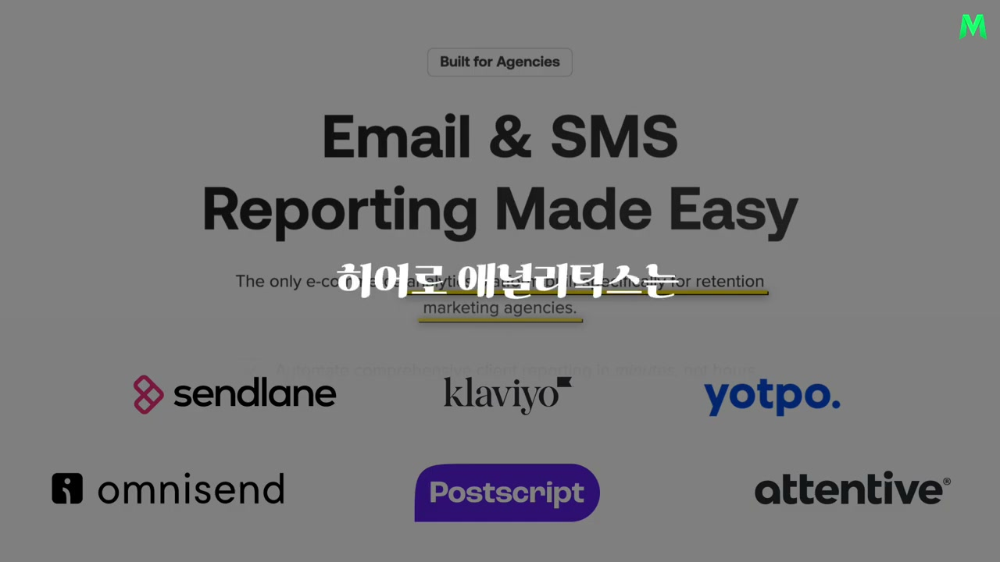
히어로 애널리틱스는 겉으로 보면 이메일 마케팅 분석 툴처럼 보인다. 그러나 제품 설명의 핵심은 “Built for Agencies”, 즉 대행사를 위해 만들어졌다는 점이다. 이메일과 SMS 리포팅을 쉽게 만들고, 센드레인·클라비요·요트포·옴니센드·포스트스크립트·애튼티브 같은 마케팅 플랫폼과 연결되는 구조가 강조된다. 이 장면은 히어로가 단순히 또 하나의 분석 도구가 아니라, 여러 고객을 대신 관리하는 조직의 업무 흐름에 맞춰 설계되었음을 보여준다.
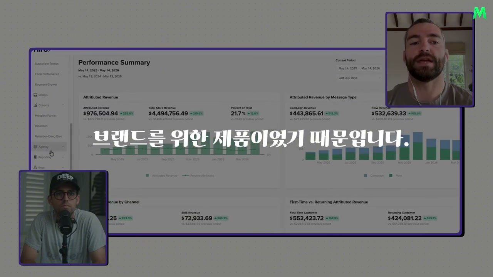
영상은 이메일 마케팅 분석 도구가 이미 시장에 넘쳐난다고 말한다. 클라비요를 비롯해 수많은 분석 솔루션이 존재하고, 브랜드들이 자신의 이메일·문자 캠페인 성과를 보는 기능은 흔했다. 그래서 “왜 굳이 또 다른 분석 툴을 만들었는가?”라는 질문이 생긴다. 답은 대부분의 기존 서비스가 브랜드를 위한 제품이었고, 대행사를 위한 제품은 아니었다는 데 있다.
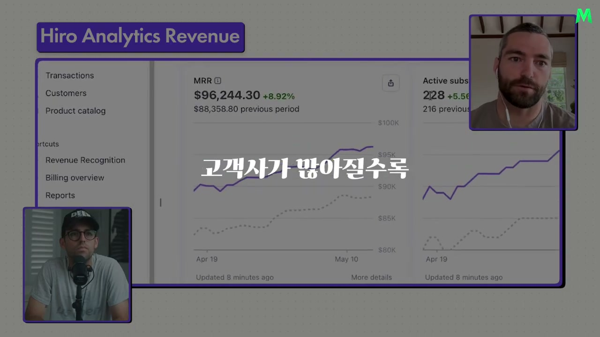
일반 기업은 자기 브랜드 하나만 관리하면 된다. 반면 대행사는 한 번에 수십 개 고객사를 관리하고, 각 고객의 성과를 매주 보고해야 한다. 담당자는 여러 계정을 오가며 데이터를 모으고, 보고서를 만들고, 팀원들의 성과까지 확인해야 한다. 고객사가 많아질수록 업무는 단순히 많아지는 수준을 넘어 관리 난이도 자체가 급격히 올라간다.
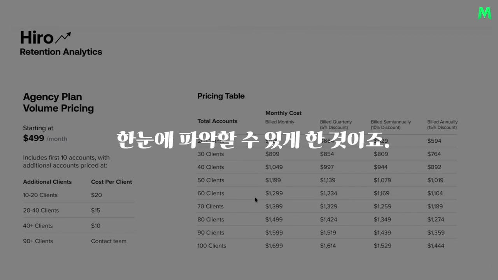
히어로 애널리틱스는 대행사 담당자가 하나의 대시보드에서 모든 고객사의 데이터를 확인할 수 있도록 만들었다. 어떤 고객이 목표를 달성하고 있는지, 어떤 캠페인이 좋은 성과를 내고 있는지, 팀원들이 현재 어떤 상태인지까지 한눈에 파악할 수 있게 하는 것이 핵심이다. 그래서 이 제품은 “이메일 마케팅 분석”을 만든 것이 아니라, 대행사의 업무 시스템 자체를 만든 것에 가깝다. 이 차이가 이후 낮은 해지율과 높은 고객 고착성으로 연결된다.
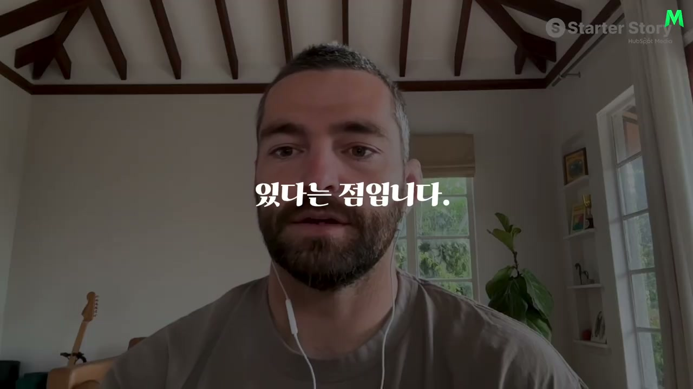
제이크가 공개한 자료에 따르면 현재 월 반복 매출은 약 1억 2천만 원 수준까지 성장했다. 매달 약 1,300만 원 규모의 신규 매출도 꾸준히 추가되고 있다고 소개된다. 그러나 영상이 더 강조하는 지표는 매출보다 낮은 해지율이다. 대행사 입장에서 시스템에 익숙해진 뒤에는 다른 서비스로 갈아탈 이유가 적고, 오히려 바꾸는 과정에서 발생하는 비용과 불편함이 더 크기 때문이다.
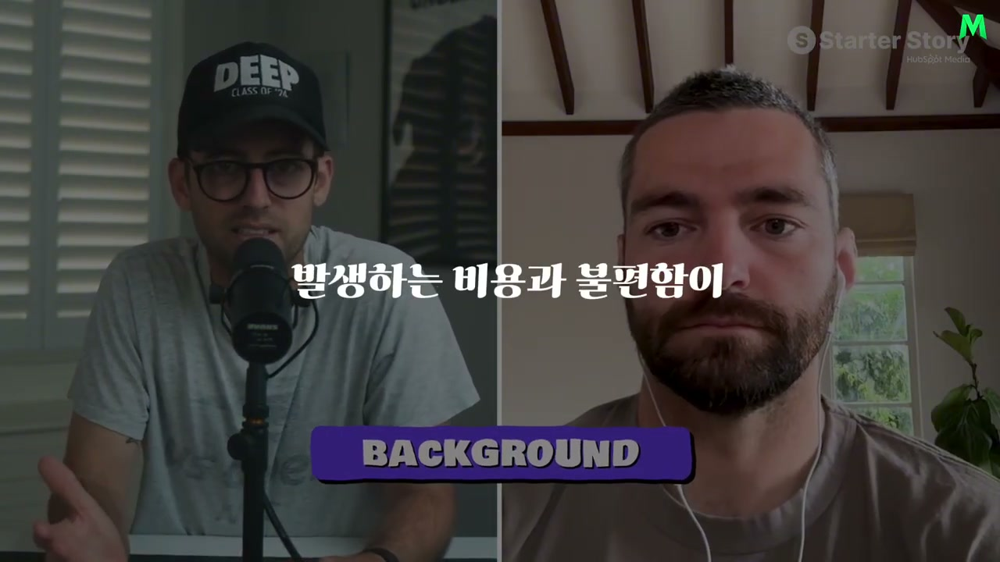
제이크와 브랜든은 처음부터 소프트웨어 회사를 운영하던 사람들이 아니었다. 두 사람은 과거 데이터 시각화 스타트업에서 함께 일했고, 그 회사가 아마존에 인수되면서 아마존 직원이 되었다. 안정적인 직장을 계속 다닐 수도 있었지만, 직접 사업을 해보고 싶다는 생각을 버리지 못했다. 그래서 안정적인 커리어를 떠나 첫 번째 창업에 도전한다.
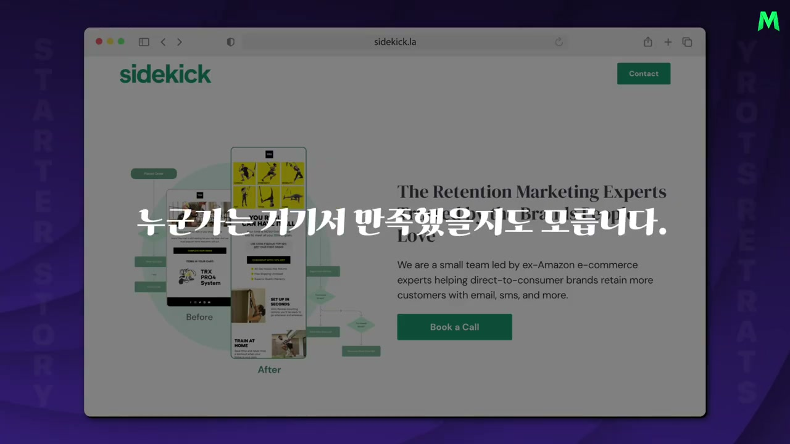
두 사람이 처음 선택한 사업은 뉴스레터 비즈니스였다. 하지만 결과는 기대와 달랐고, 사업은 크게 성장하지 못한 채 실패로 끝났다. 많은 사람은 실패를 시간 낭비로 생각하지만, 제이크는 이 과정에서 이메일 마케팅에 대한 깊은 인사이트를 얻었다. 이 경험은 이후 이메일 마케팅 대행사 창업과 히어로 애널리틱스 탄생의 기반이 된다.
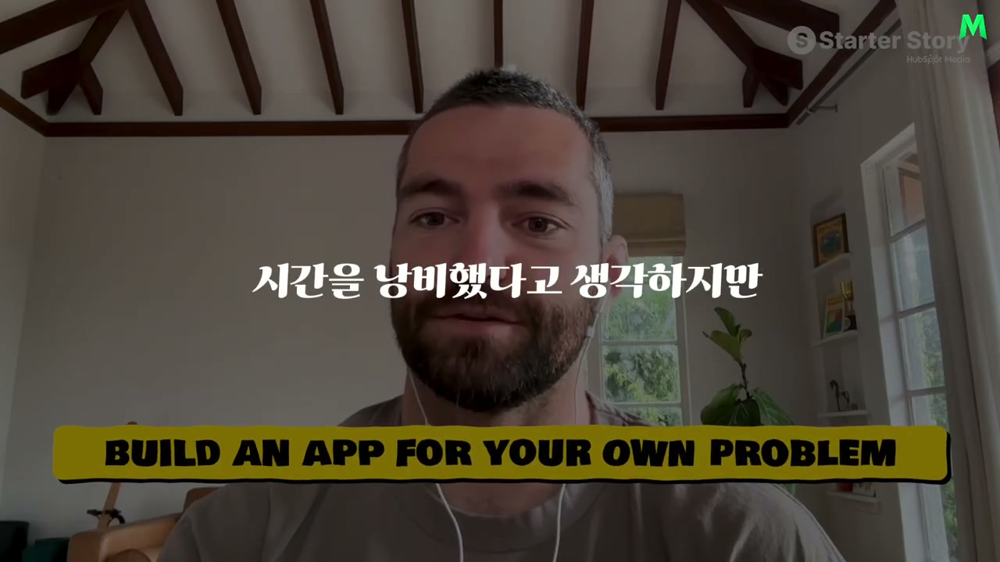
뉴스레터 사업에서 얻은 이메일 마케팅 이해를 바탕으로 제이크와 브랜든은 새로운 사업을 시작한다. 그것은 이메일 마케팅 대행사였다. 이 사업은 첫 번째 뉴스레터 사업과 달리 6년 동안 운영되며 약 30개 고객사를 관리하는 수준까지 성장했다. 이 시기 동안 두 사람은 이메일 마케팅 대행사가 실제로 매주 어떤 반복 업무를 겪는지 몸으로 알게 되었다.
6년 동안 대행사를 운영하면서 반복적으로 마주한 문제는 고객사 데이터를 모으고, 정리하고, 보고서를 만들고, 성과를 설명하는 일이었다. 한두 개 고객이라면 큰 문제가 아니지만, 수십 개 고객사가 되면 같은 일을 계속 반복해야 한다. 보고서 하나를 만드는 데도 상당한 시간이 들어가고, 사람이 직접 처리하다 보니 실수도 발생한다. 어느 날 “우리가 매주 반복하는 이 일을 자동화할 수 없을까?”라는 질문이 히어로 애널리틱스의 출발점이 되었다.
영상은 히어로의 아이디어가 유행 산업 분석이나 거창한 시장 조사에서 나온 것이 아니라고 강조한다. 오히려 6년 동안 직접 겪었던 불편함에서 탄생했다. 이는 창업 아이디어를 찾는 방식에 대한 중요한 반론이다. 남들이 말하는 트렌드보다, 내가 잘 알고 반복해서 겪는 고통이 훨씬 강력한 제품의 출발점이 될 수 있다는 뜻이다.
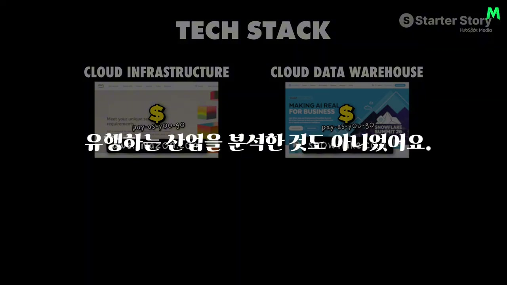
제품을 만드는 과정은 순탄하지 않았다. 두 사람은 전문 개발자가 아니었기 때문에 예기치 못한 문제들을 계속 마주했다. 클라우드 비용이 예상보다 훨씬 많이 나오기도 했고, 시스템 구조를 설계하면서 여러 번 시행착오를 겪었다. 하지만 오랫동안 데이터를 다뤄온 경험 덕분에 데이터 추출과 가공 구조에 대한 이해도가 높았고, 이것이 가장 큰 강점으로 작동했다.
결국 두 사람은 자신들이 가장 잘하는 분야를 활용해 문제를 해결했다. 데이터 구조를 이해하고, 여러 플랫폼에서 데이터를 가져와 가공하고, 대행사 업무 흐름에 맞는 리포팅 구조를 설계하는 역량이 핵심이었다. 최근에는 기술 구조까지 전면 개편하며 더 안정적인 클라우드 기반 서비스로 발전했다고 설명된다. 이는 초기 제품이 완벽하지 않아도, 고객 문제와 도메인 이해가 명확하면 개선을 통해 성장할 수 있음을 보여준다.
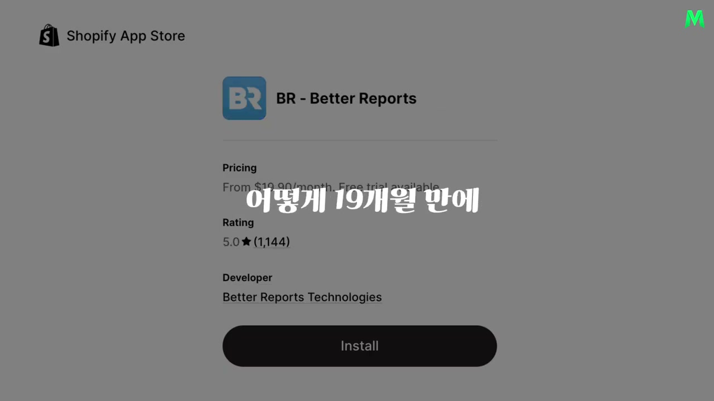
히어로 애널리틱스가 19개월 만에 연매출 13억 규모까지 성장할 수 있었던 비결은 고객 전략에 있었다. 제이크는 무엇을 만들 것인가보다 누구에게 팔 것인가를 더 중요하게 생각했다. 대부분의 분석 도구 회사는 브랜드를 고객으로 삼고, 개별 기업 하나하나를 직접 설득한다. 반면 제이크는 브랜드가 아니라 대행사를 고객으로 삼으면서 판매 구조 자체를 뒤집었다.
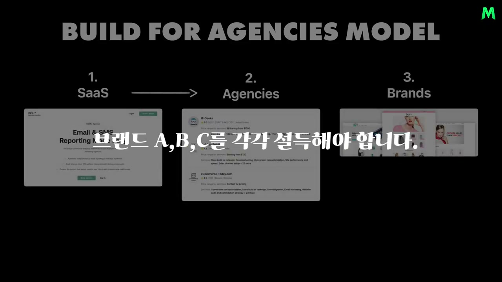
일반적인 SaaS 회사가 구독 고객을 세 명 늘리려면 브랜드 A, B, C를 각각 설득해야 한다. 고객이 늘어날수록 영업도 비례해서 늘어나는 구조다. 그런데 히어로는 대행사 한 곳을 설득함으로써 그 대행사가 관리하는 여러 브랜드에 동시에 진입한다. 즉, 고객 하나를 얻었지만 실제로는 수십 개 브랜드의 업무 흐름 안으로 들어가는 효과가 생긴다.
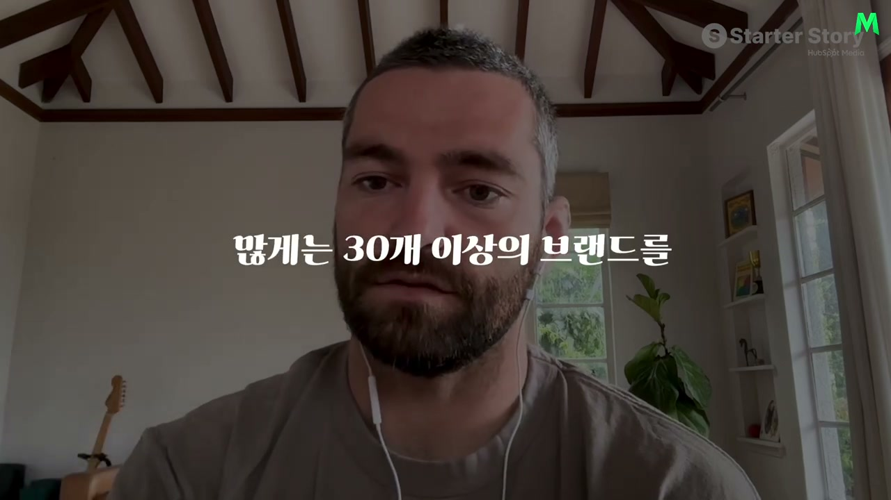
대행사는 굉장히 특별한 고객이다. 한 곳의 대행사가 적게는 10개, 많게는 30개 이상의 브랜드를 동시에 관리하기 때문이다. 따라서 브랜드 하나를 설득하는 것이 아니라 대행사 하나를 설득하면, 수십 개 브랜드에 동시에 닿는 구조가 만들어진다. 이것이 영상에서 말하는 “대행사 레이어”의 핵심이다.
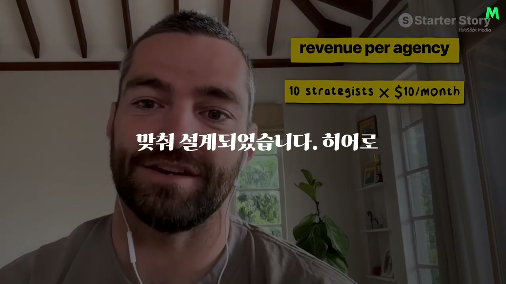
히어로 애널리틱스는 대행사가 보유한 고객 수에 따라 가격이 올라가는 구조를 가지고 있다. 대행사가 관리하는 고객사가 많을수록 제품에서 얻는 가치도 커진다. 따라서 더 많은 고객사를 가진 대행사는 더 높은 비용을 지불할 합리적 이유가 있다. 이는 단순히 좌석 수를 파는 모델이 아니라, 고객사의 규모와 사용 가치에 따라 매출이 커지는 모델이다.
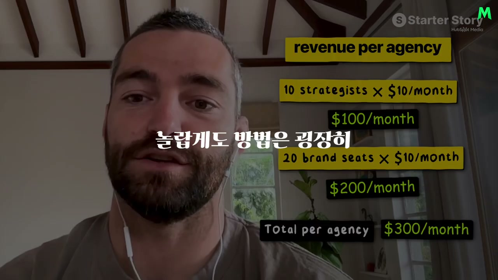
예시로 대행사 내부 전략가 10명에게 월 10달러씩 과금하면 월 100달러가 되고, 브랜드 좌석 20개에 월 10달러씩 과금하면 월 200달러가 추가된다. 그러면 한 대행사에서 월 300달러가 발생하는 식의 구조가 된다. 고객 한 곳을 확보했을 뿐인데 여러 층에서 매출이 발생한다. 이 구조가 누적되면 단일 고객 영업 대비 훨씬 효율적인 성장 경로가 열린다.
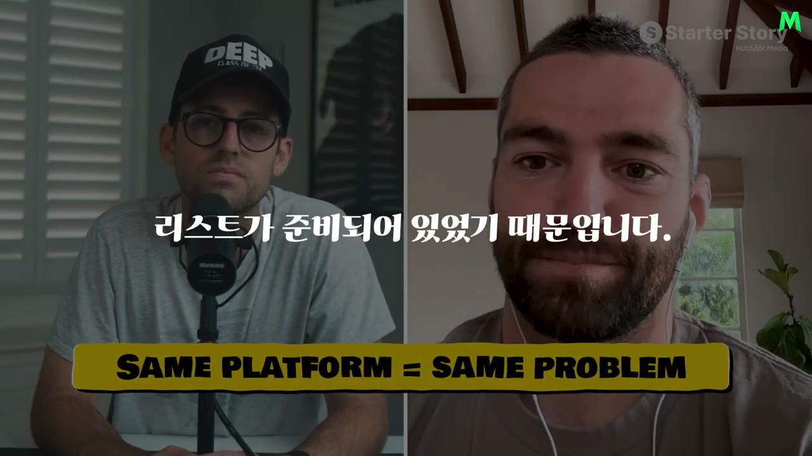
대행사들을 찾는 방법도 놀랍게 단순했다. 클라비요나 쇼피파이 같은 플랫폼들은 공식 파트너 디렉터리를 운영한다. 다시 말해 이메일 마케팅 대행사들의 명단은 이미 인터넷에 공개되어 있다. 제이크 입장에서는 잠재 고객을 찾기 위해 복잡한 시장 조사를 할 필요가 없었고, 이미 만나야 할 고객 리스트가 준비되어 있었다.
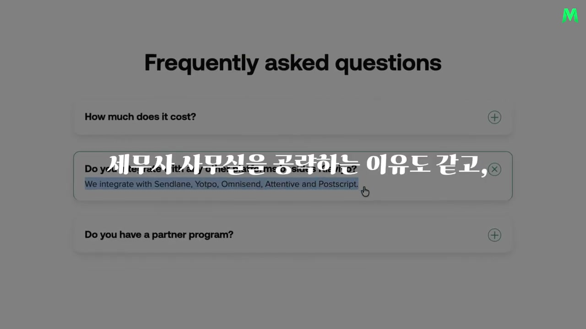
이 고객들은 매우 비슷한 문제를 공유하고 있었다. 하나의 대행사가 겪는 문제는 다른 대행사도 거의 동일하게 겪는다. 따라서 기능 하나를 개발하면 대부분의 고객이 동시에 혜택을 받는다고 설명할 수 있다. 영상의 “Same Platform = Same Problem”이라는 논리는 제품 개발 효율과 영업 메시지 효율을 동시에 설명한다.
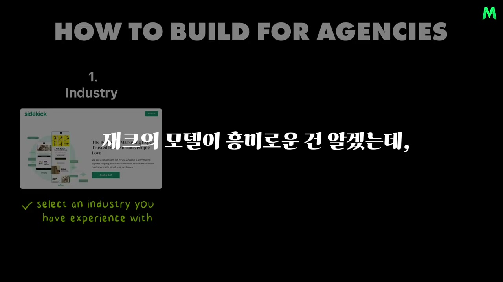
영상은 이런 전략이 주변에서도 자주 보인다고 말한다. 세금 신고 프로그램이 개인 납세자에게 직접 판매하기보다 세무사 사무실을 공략하는 이유가 그렇다. 급여 관리 소프트웨어가 개별 직원이 아니라 회계법인을 공략하는 이유도 같다. 한 명의 직접 고객 뒤에 수백 명의 최종 사용자가 존재하기 때문이다.
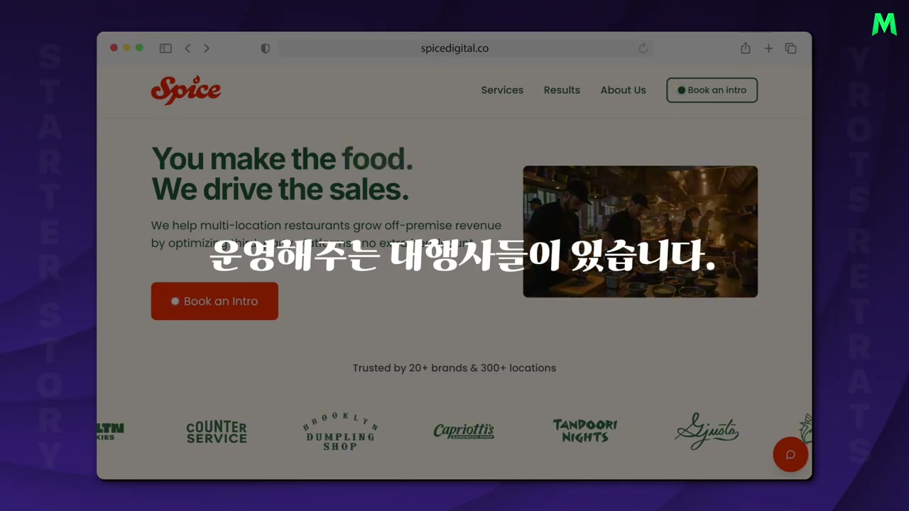
예시로 배달 플랫폼 광고가 등장한다. 배달의민족이나 쿠팡이츠 광고를 대신 운영해 주는 대행사들이 있고, 이 대행사들도 수십 개 식당 클라이언트를 관리하며 매주 성과를 보고해야 한다. 이것은 히어로 애널리틱스가 해결한 문제와 구조적으로 같다. 업종은 다르지만 “여러 클라이언트를 대신 관리하고 반복 리포팅을 해야 하는 대행사”라는 문제 구조는 동일하다.
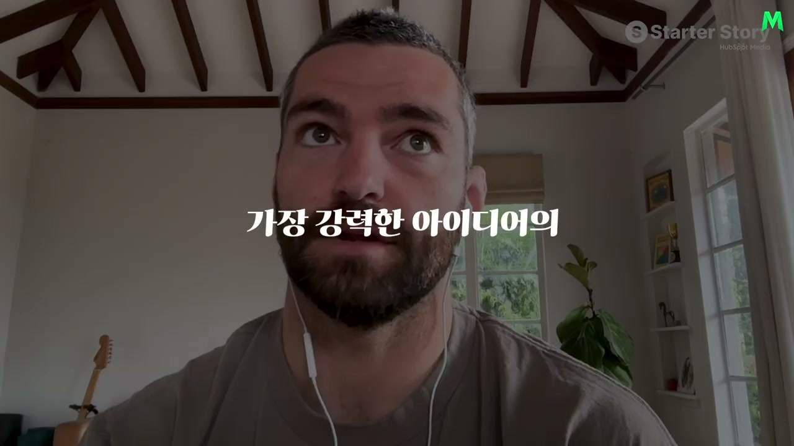
비슷한 사업을 시작하고 싶은 사람에게 제이크가 제시하는 접근법은 세 단계다. 첫째, 지금 내가 일하고 있거나 잘 아는 산업에서 시작하라. 직접 경험한 불편함이 가장 강력한 아이디어의 원천이기 때문이다. 둘째, 그 산업의 핵심 플랫폼 사이트에 들어가 파트너 디렉터리나 대행사 디렉터리를 찾아야 한다.
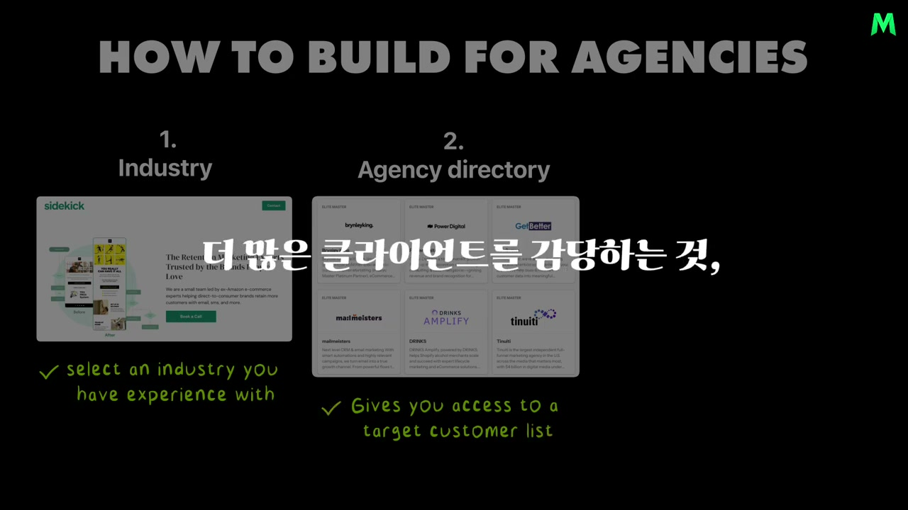
셋째, 그 대행사들이 공통으로 겪는 문제를 찾아내야 한다. 대부분의 대행사 오너들은 업종을 불문하고 비슷한 고민을 한다. 더 적은 인력으로 더 많은 클라이언트를 감당하는 것, 반복 업무에 드는 시간을 줄이는 것, 이 두 가지가 핵심이다. 이 문제를 해결해 주는 도구라면 대행사 오너는 진지하게 귀를 기울일 수밖에 없다.
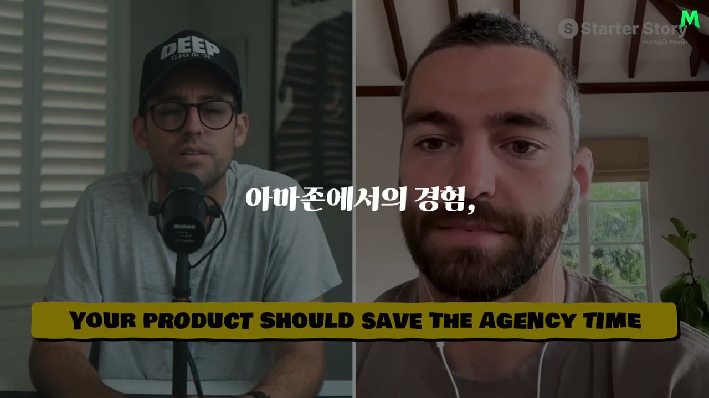
제이크가 마지막에 남긴 메시지는 히어로의 성공이 단기간의 운이 아니라는 점이다. 겉으로는 1년 반 만에 13억 원을 달성한 것처럼 보이지만, 사실 이 사업에는 10년이 걸렸다고 말한다. 실패한 뉴스레터 사업, 아마존에서의 경험, 6년간의 대행사 운영 경험이 모두 없었다면 히어로 애널리틱스도 없었을 것이라는 해석이다. 즉, 빠른 성과 뒤에는 축적된 도메인 경험과 실패의 누적이 있었다.
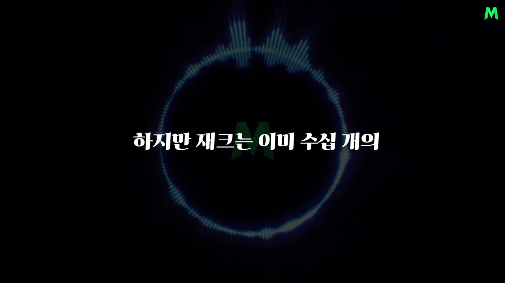
영상 말미에서 발표자는 자신에게 가장 인상적이었던 내용이 “대행사 레이어” 개념이었다고 말한다. 대부분의 사람들은 고객에게 직접 판매하는 방법만 고민하지만, 제이크는 이미 수십 개 고객을 보유한 대행사를 공략했다. 그리고 그들이 겪는 공통 문제를 해결하는 데 집중했다. 그 결과 19개월 만에 연매출 13억 규모의 사업을 만들 수 있었다.
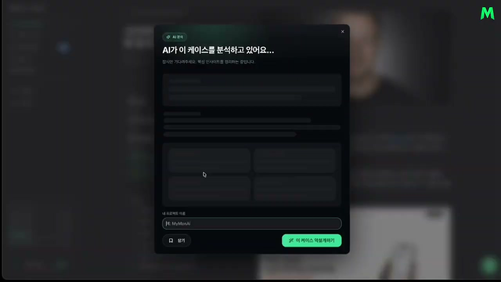
마지막에는 동기부여학과에서 운영하는 히든 리치스 서비스가 소개된다. 해외에서 성공적으로 운영 중인 비즈니스 사례를 분석해 매주 업데이트하고, 그중 마음에 드는 사업을 선택하면 AI가 해당 사례를 분석해 사업계획서를 만들어 준다는 설명이다. 또한 복사해 붙여 넣기만 하면 되는 최종 프롬프트까지 제공한다고 말한다. 이는 바이브 코딩으로 온라인 사업을 만들고 싶지만 어디서 시작해야 할지 막막한 사람들을 위한 안내로 연결된다.
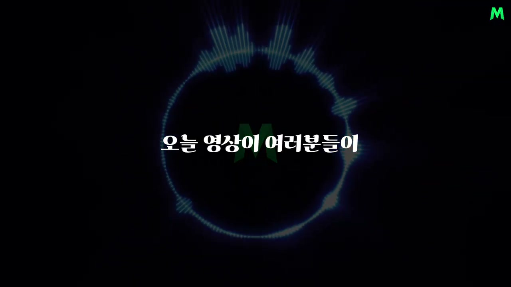
영상은 시청자들이 자신만의 사업 아이디어를 발견하는 데 도움이 되었기를 바란다는 말로 끝난다. 고정 댓글 확인을 안내하고, 정상에서 보겠다는 채널 특유의 마무리 인사를 남긴다. 본편의 메시지와 CTA는 모두 “이미 검증된 문제 구조를 찾아라”, “직접 경험한 불편을 제품화하라”, “최종 사용자보다 영향력 있는 고객 레이어를 찾아라”로 연결된다.
“히어로 애널리틱스는 이메일 마케팅 분석을 만든 것이 아니라 대행사의 업무 시스템 자체를 만든 셈입니다.”
“제이크는 무엇을 만들 것인가보다 누구에게 팔 것인가를 더 중요하게 생각했습니다.”
“직접 경험한 불편함이 가장 강력한 아이디어의 원천입니다.”
“브랜드 하나를 설득하는 것이 아니라 대행사 하나를 설득함으로써 수십 개의 브랜드에 동시에 진입하는 구조를 만든 것입니다.”
“같은 플랫폼을 쓰는 대행사들은 거의 동일한 문제를 겪고 있습니다.”
“히어로가 1년 반 만에 13억을 달성한 것처럼 보이지만, 사실 이 사업은 10년이 걸렸습니다.”
이 영상의 핵심은 레드오션 시장에서도 고객 선택을 바꾸면 완전히 다른 사업 기회가 생긴다는 것이다. 히어로 애널리틱스는 이메일 마케팅 분석 기능 자체로 승부한 것이 아니라, 대행사라는 특수 고객의 반복 업무와 리포팅 고통을 해결했다. 그래서 제품은 단순한 분석 도구가 아니라 대행사의 운영 시스템이 되었고, 고객이 많아질수록 더 큰 가치를 제공하는 구조를 만들었다.
실용적 시사점은 세 가지다. 첫째, 사업 아이디어는 유행 산업보다 내가 직접 겪은 반복적 불편에서 찾는 것이 강력하다. 둘째, 고객을 최종 사용자로만 보지 말고, 그 뒤에 여러 사용자를 품고 있는 대행사·사무소·법인·파트너 레이어를 찾아야 한다. 셋째, 기능을 더 많이 만드는 것보다 고객의 업무 흐름 안에 깊이 들어가는 제품을 만드는 것이 낮은 해지율과 빠른 성장을 만든다.
댓글
GitHub 이슈 기반 댓글 시스템입니다.